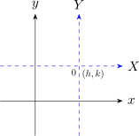
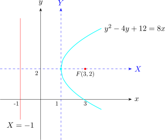

1.5 Translation of Axes
New axes \(X\) and \(Y\) with new origin \(O\).

If we take the point \((h,k)\) to be the new origin, then in the system we will have co-ordinates \(P(X,Y)\) become \(P(X + h, Y+k)\) in the original coordinate system i.e \[X = x - h\hspace {0.5cm} \text {and} \hspace {0.5cm} Y = y -k\]
\[x = X + h\hspace {0.5cm} \text {and} \hspace {0.5cm} y = Y + k\]
and these are the translation equations.
Discuss the graph of \(y^2 - 4y + 12 = 8x\).
\begin {align*} y^2 - 4y + 12 & = 8x\\ (y - 2)^2 - 4 + 12 & = 8x\\ (y - 2)^2 & = 8(x-1) \end {align*}
Taking, \(X = x -1\) and \(Y = y -2\) we have \[Y^2 = 8X\hspace {0.3cm}\text {or}\hspace {0.3cm} Y^2 = 4(2)X\] Which is the standard equation of a parabola in the new coordinate system, the vertex is \((0,0)\), the focus is \((2,0)\) and the directrix is \(X = -2\).
In the original coordinate system the vertix is \((1,2)\), the focus is \((3,2)\) and the directrix is \( x = -1\).

Questions on this section
Stuck on something here? Ask below and it stays attached to this topic.